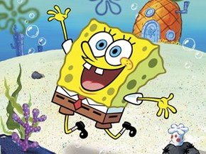

Sinopse:
Bob Esponja Calça Quadrada é uma esponja do
mar que mora em uma casa de abacaxi. Junto ao melhor amigo,
Patrick Estrela, ele sempre tira a paciência do vizinho Lula Molusco.
Bob Esponja trabalha no Siri Cascudo, para o Sr. Sirigueijo,
fazendo os famosos hambúrgueres de siri.
Autor: Stephen Hillenburg
Primeiro episódio: 1 de maio de 1999
Adaptações:Bob Esponja: O Filme (2004), Bob Esponja: Um Herói Fora D'Água (2015)
Gêneros: Ficção de aventura, Fantasia, História de super-herói
| Temporada | Eps | Temporada | Eps |
| Temporada 1 | Temporada 8 | ||
| Temporada 2 | Temporada 9 | ||
| Temporada 3 | Temporada 10 | ||
| Temporada 4 | Temporada 11 | ||
| Temporada 5 | Temporada 12 | ||
| Temporada 6 | Temporada 13 | ||
| Temporada 7 |
